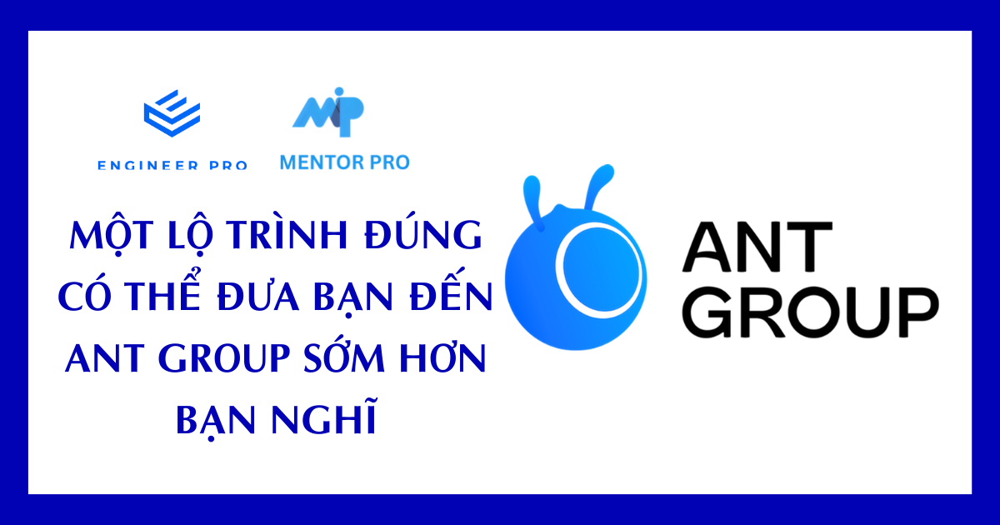
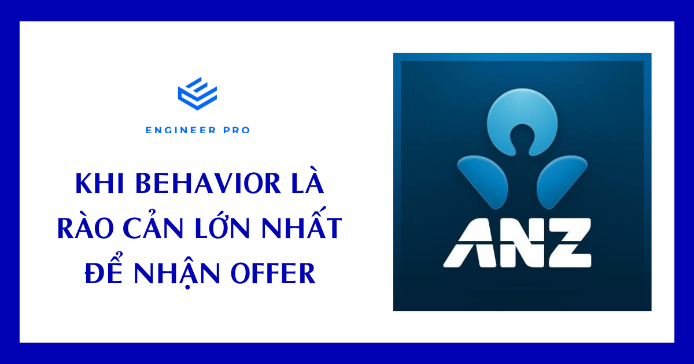
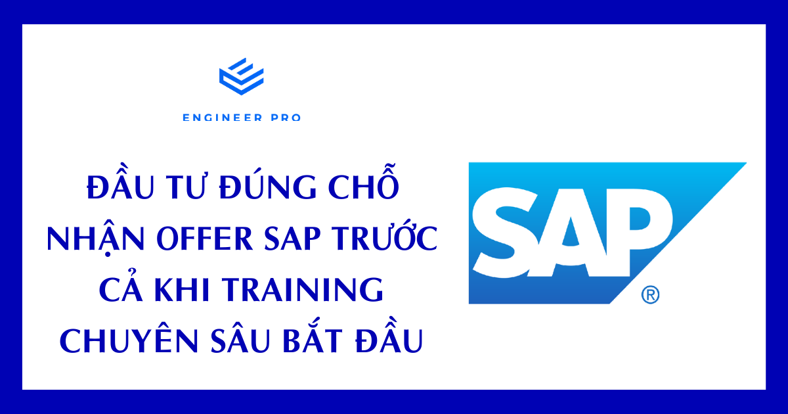
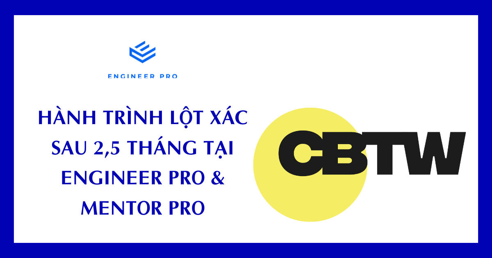
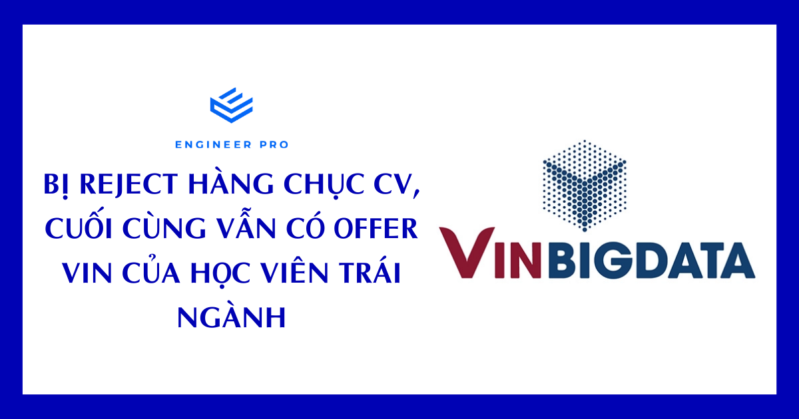
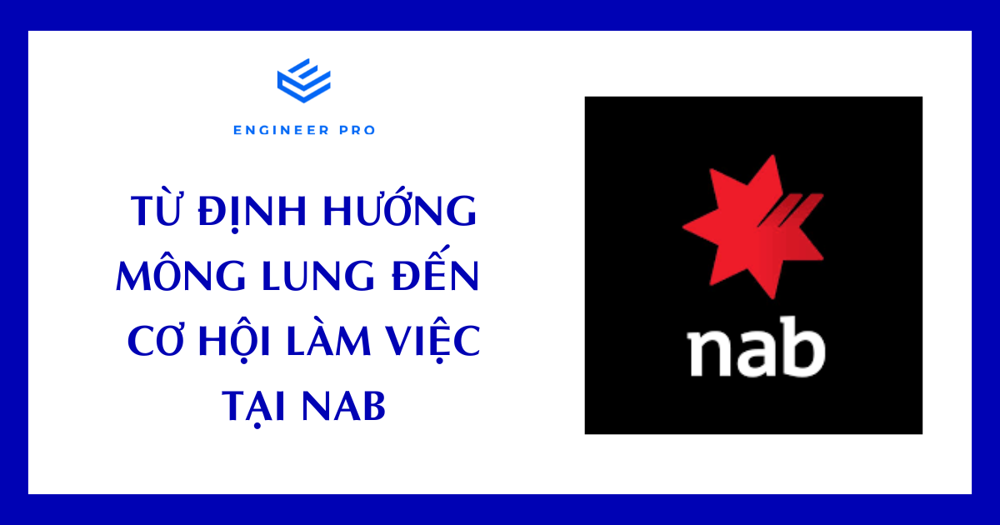
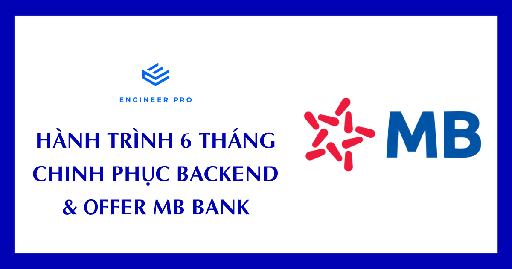

Mentor tại MentorPro đều là engineer Big Tech — đã trực tiếp phỏng vấn, hiring và build hệ thống ở quy mô lớn.


Mentor X
ex-Meta UK
LinkedIn ẩn theo yêu cầuDưới đây là 7 câu chuyện thật từ các học viên MentorPro — mỗi người một background, một cú rẽ, nhưng cùng chung một kết quả: nhận offer từ công ty mình mong muốn nhờ lộ trình đúng và sự đồng hành sát sao.
Highlights (từ 7/2025 — tháng thành lập)
- 12 học viên đã nhận offer, trong đó 8 offer từ 5 mentor Big Tech được công khai chia sẻ ở 7 câu chuyện bên dưới.
- Công ty đối tác: ANT Group · ANZ · SAP · Naver · Deputy · VinBigData · NAB · MB Bank.
- Học viên đa dạng: fresh grad → 5+ năm kinh nghiệm, từ outsource đến trái ngành.
- Trung bình 2 – 6 tháng từ khi vào lộ trình tới khi nhận offer.
7 câu chuyện — click vào để đọc chi tiết

#1
Trang — Fresh grad → ANT Group
Mentor anh Lâm · 2 tháng · Java Developer offer · Sinh năm 2003
▾
Background: Sinh năm 2003, vừa tốt nghiệp đại học, đang thực tập Backend Java tại một công ty công nghệ ở Việt Nam.
Mentor: Anh Lâm.
Thời gian tại MentorPro: Hơn 2 tháng (bắt đầu từ tháng 8).
Kết quả: Pass cả 3 vòng phỏng vấn, đang trao đổi lương & benefit cho vị trí Java Developer @ ANT Group.
Lộ trình ôn luyện: - Trước MentorPro đã học DSA 2, System Design 1 & 2, Backend tại Engineer Pro. - Mentor assign thêm Low Level Design và Behavior Interview để bổ sung kiến thức và kỹ năng phỏng vấn. - Mỗi ngày luyện 2 bài LeetCode + làm bài tập do mentor giao + được refer vào nhiều công ty để cọ xát. - Mentor mock interview riêng về System Design trước khi vào vòng 2.
Quy trình phỏng vấn ANT Group (3 vòng): 1. Phỏng vấn với 2 engineer người Việt — hỏi rất sâu về project (thanh toán trực tuyến) và Core Java. 2. Phỏng vấn với manager bên Singapore — tập trung vào project, behavior và một câu logic. 3. Phỏng vấn Hiring Manager — định hướng nghề nghiệp & cultural fit.
"Em từng phỏng vấn Microsoft, Anduin, NAB, WorldQuant và đều chưa pass. Với ANT Group thì lộ trình ôn cùng anh Lâm và các khoá ở Engineer Pro giúp em hệ thống lại đúng trọng tâm — biết nên tập trung vào đâu thay vì học lan man."

#2
Khánh Chương — 3-4y Backend → ANZ
Mentor anh Lâm + anh Hòa · Khi behavior là rào cản lớn nhất
▾
Background: 3-4 năm kinh nghiệm Backend Engineer, đã tự ôn DSA & System Design trước khi vào MentorPro.
Mentor: Anh Lâm (review code, refer công ty) + anh Hòa (CS & DSA deep-dive).
Kết quả: Pass ANZ — đang chờ headcount chính thức (có thể đầu năm sau).
Vấn đề lớn nhất không nằm ở technical: - Technical pass dễ dàng nhờ đã ôn DSA + System Design. - Liên tục bị fail ở vòng culture fit / behavioral dù vượt qua hết các vòng technical. - Mentor feedback thẳng thắn → bạn luyện communication và viết lại story theo STAR framework.
Lộ trình tại MentorPro: - Review lại CV — bổ sung impact số liệu cụ thể. - Review code → chỉ ra code smell và cách refactor. - Học thêm các khoá Redis, Go, Java (stack thị trường VN chuộng) tại Engineer Pro. - Được refer phỏng vấn 7-8 công ty, học hỏi từ thực chiến.
Quy trình ANZ (2 vòng, ~150 phút mỗi vòng): 1. Behavior + technical CS + DSA (HackerRank, 45 phút). 2. Behavior + technical discussion + System Design.
"Technical có thể đào tạo thêm, còn communication thì rất khó thay đổi trong thời gian ngắn. Đừng xem nhẹ culture fit — có nhiều trường hợp technical bạn tốt hơn ứng viên khác, nhưng người ta vẫn chọn ứng viên giao tiếp tốt hơn."

#3
Tiên — 4.5y Java/Banking → SAP + Naver
Mentor anh Lâm + anh Long · 2 offer cùng lúc, trước khi training chính thức bắt đầu
▾
Background: Software Engineer 4.5 năm, ngôn ngữ chính Java, domain banking, đang làm tại công ty outsource.
Mentor: Anh Lâm + anh Long (behavioral).
Kết quả: 2 offer cùng lúc: SAP (qua 3 vòng dài & khó) và Naver (sau khi nego mức lương).
Đặc biệt: Tiên nhận offer trước cả khi training chuyên sâu chính thức bắt đầu (hợp đồng 15/12, nhưng cuối tháng 12 đã có offer).
Lộ trình tại MentorPro: - Sửa CV + luyện LeetCode 2-3 bài/ngày từ dễ đến khó. - Học các khoá nền tảng: DSA 1, DSA 2, System Design 1, CS, Redis (với anh Quang Hòa). - Soạn behavioral theo cấu trúc STAR, không học thuộc — gắn với trải nghiệm thật, dùng ChatGPT để kiểm tra logic & diễn đạt.
Quy trình SAP (3 vòng): 1. Online — hỏi project + lý thuyết + 1 câu thuật toán. 2. Online — sâu về Java, Spring Boot, kiến thức hệ thống + 1 câu thuật toán (tiếng Anh). 3. Onsite ~2 tiếng với 3 interviewer (1 VN + 2 manager nước ngoài) — mỗi người hỏi 1 câu LeetCode + technical + tình huống.
Quy trình Naver (ngắn gọn hơn): - Bài test → Technical interview (tình huống System Design mở) → Cultural interview với COO + người Hàn Quốc (có phiên dịch).
"Nếu chỉ học khóa lẻ thì rất dễ lười. MentorPro có cam kết cao hơn, chi phí cao hơn — nhưng chính vì có cam kết nên mình buộc phải nghiêm túc. Đó là điều bước ngoặt."

#4
Chấn — 5+y Backend Outsource → Deputy (team Úc)
Mentor anh Lâm + anh Harry · 2.5 tháng · Tự apply không referral
▾
Background: 5+ năm kinh nghiệm Backend, làm việc ở các công ty outsource nhỏ tại Việt Nam.
Mentor: Anh Lâm + anh Harry. Là một trong những học viên đầu tiên của chương trình.
Thời gian tại MentorPro: 2 tháng rưỡi (bắt đầu 23/6).
Kết quả: Offer Mid-level Backend Engineer @ Deputy (team headquarter ở Úc).
Đặc biệt: Chấn apply Deputy hoàn toàn tự túc, không qua referral. Mentor ban đầu còn khuyên chờ thêm để chuẩn bị kỹ hơn, nhưng Chấn quyết định "ra trận" để học từ thực chiến — và pass luôn.
Lộ trình tại MentorPro: - Trước đó đã học DSA 1, DSA 2, System Design 1, Behavior + mini project tại Engineer Pro. - Mỗi tuần có 1 buổi call cố định với mentor để review tiến độ. - Được hỗ trợ qua chat 24/7 khi vướng mắc. - Mentor chỉ cho học tiếp khi đã nắm vững phần trước → tránh học lan man.
Quy trình Deputy (4 vòng): 1. HR call. 2. Bài test theo technical stack của team (nửa tuần để hoàn thành). 3. Technical interview ~2 tiếng — Engineering Manager (backend + project) + Senior Engineer (review bài test + pair programming). 4. Culture fit với team Úc, 100% tiếng Anh.
"Mentor chỉ là người dẫn đường. Giống huấn luyện viên ở phòng gym — họ đưa ra kế hoạch và theo sát, còn việc luyện tập vẫn phụ thuộc vào bản thân. Khi phỏng vấn, đừng chỉ tập trung giải đúng bài — hãy trình bày suy nghĩ. Nhiều người làm đúng nhưng vẫn rớt vì không thể hiện được tư duy."

#5
Việt — Trái ngành Ngôn ngữ → VinBigData
Chị Lam + anh Lâm · Bị reject hàng chục CV, vấn đề không ở kiến thức
▾
Background: Tốt nghiệp ngành Ngôn ngữ (khối xã hội), tự chuyển sang IT từ 2019, có 4 năm kinh nghiệm SE (gián đoạn 2 năm chuyển ngành), từng làm việc tại Nhật Bản.
Mentor: Chị Lam + anh Lâm.
Thời gian tại MentorPro: Vào tháng 8, đạt mục tiêu cuối năm có offer.
Kết quả: Offer VinBigData sau hàng chục lần bị reject CV trước đó.
Vấn đề lớn nhất KHÔNG phải kiến thức — mà là CV: - Đã tự ôn DSA gần 2 năm trước khi vào MentorPro. - Liên tục bị reject từ vòng CV, không biết mình yếu ở đâu — "giống như đi học mà không được đi thi, rất mơ hồ". - MentorPro build lại CV, tailor cho từng vị trí, bổ sung project; mentor anh Lâm chủ động tìm job và refer.
Khoá học bổ sung: - Redis với anh Hoàng (đáng học bậc nhất — giúp hiểu cách kể câu chuyện bản thân có chiến lược). - Behavior Interview — quan trọng nhất với người trái ngành. - System Design — điểm yếu lớn nhất do tự học rất khó.
Quy trình VinBigData: - Chỉ 1 vòng phỏng vấn duy nhất, ~2 tiếng — CS Fundamental + Backend + kinh nghiệm làm việc, không hỏi DSA.
"Đừng bỏ cuộc quá sớm. Ít nhất là phải thử. Nếu fail nhiều lần rồi mới kết luận là mình chưa đủ — còn hơn là bỏ cuộc khi chưa thật sự được kiểm chứng. Khi mình apply hàng chục công ty mà liên tục bị reject, nếu không có mentor động viên, có lẽ mình đã bỏ cuộc từ lâu rồi."

#6
Hậu — 4+y Backend → NAB Úc (Sub Engineer)
Mentor anh Lâm + anh Hòa · Hơn 1 tháng · National Australia Bank
▾
Background: Tốt nghiệp CNTT tại TP.HCM, 4+ năm kinh nghiệm Backend qua 3 công ty trong & ngoài nước.
Mentor: Anh Lâm + anh Hòa.
Thời gian tại MentorPro: Hơn 1 tháng.
Kết quả: Offer Sub Engineer @ NAB (National Australia Bank), onboard giữa tháng 8.
Vấn đề trước khi vào MentorPro: "đi làm nhiều năm nhưng vẫn không rõ mình đang ở đâu, cần đi theo hướng nào" — học khoá Engineer Pro thụ động, không có target rõ ràng.
MentorPro đánh giá kỹ năng và build lộ trình cá nhân hoá: 1. Củng cố DSA 1 + DSA 2 từ đầu (dù đã học trước đó). 2. CS Fundamental — bổ sung phần khoa học máy tính bị hổng. 3. Behavioral — luyện kỹ năng phỏng vấn hành vi. 4. DSA 3 — tiếp cận bài toán nâng cao. 5. Mock interview mô phỏng đúng cấu trúc Big Tech.
Quy trình NAB (3 vòng): 1. Online Assessment — DSA & cấu trúc dữ liệu. 2. Vòng khó nhất — Q&A đa lĩnh vực: CS, frontend (JS, CSS), security, backend (RESTful API). 3. Technical interview chuyên sâu — problem solving + System Design.
"Trước đây mình khá mất phương hướng — không biết trình độ ở đâu, ôn từ đâu để đủ sức phỏng vấn. Mentor Pro đánh giá rất chi tiết và xây lộ trình cá nhân hoá. Sau vài tuần mình đã tự tin hơn hẳn về cả kỹ năng lẫn tư duy phỏng vấn."

#7
Long — 5y Game Dev → MB Bank Backend
Mentor anh Lâm · 6 tháng chuyển ngành full-time
▾
Background: 5 năm lập trình game, cảm thấy bài toán lặp lại & giới hạn tiềm năng phát triển → nghỉ việc full-time để chuyển sang Backend.
Mentor: Anh Lâm — đồng hành xuyên suốt 5 tháng.
Thời gian: 6 tháng tổng cộng từ khi bắt đầu học → nhận draft offer.
Kết quả: Draft offer Backend Engineer @ MB Bank.
Lộ trình chuyển ngành rất bài bản: - Học song song DSA + Backend Golang ngay từ đầu. - Tiếp tục với Computer Science Fundamentals để vững nền tảng. - Chuyển sang Java → làm các project thực tế: Reddit clone, mini database. - Học thêm System Design, Behavior.
Trước MB Bank, Long cũng đã apply: - Grab — reject từ vòng CV. - Viettel — qua vòng đầu, đang chuẩn bị vòng tiếp.
Quy trình MB Bank (2 vòng): - Cả 2 vòng đều thiên về technical — hỏi sâu về project, kinh nghiệm và kiến thức nền tảng. Không hỏi DSA.
"5 tháng học theo lộ trình MentorPro là khá nhanh. Mình không học kiểu 10-16 tiếng/ngày mà học theo lịch trình hợp lý, tiếp thu tự nhiên. Quan trọng là dùng AI thật nhiều — khi có thắc mắc, hỏi và trao đổi ngay để hiểu sâu, hiểu nhanh."
MentorPro là chương trình mentor 1:1 cá nhân hoá, đồng hành đến khi bạn nhận được job offer — không phải khoá học đại trà.

3 bước để trở thành mentee
Bước 1 · Screening CV
Bạn gửi resume cho MentorPro. Đội ngũ mentor sẽ đánh giá nền tảng hiện có và định hướng phát triển để xác định chương trình 1:1 có phù hợp với mục tiêu của bạn không.
Bước 2 · Trao đổi trực tiếp cùng Mentor
Nếu CV đạt điều kiện, mentor sẽ sắp xếp gọi 1:1 để trao đổi và confirm có nhận mentee hay không. Buổi gọi này sẽ:
- Làm rõ mục tiêu công ty / vị trí bạn nhắm tới.
- Xây dựng lộ trình học phù hợp với trình độ hiện tại.
- Thống nhất tần suất gặp, cách thức làm việc.
Bước 3 · Tham gia chương trình huấn luyện
Sau khi nhận, mentor theo sát 1:1 xuyên suốt cho đến khi bạn nhận được job offer. Lộ trình được thiết kế riêng — không one-size-fits-all (xem chi tiết các case ở Tab 2 — Câu chuyện thành công).
Hợp tác chiến lược cùng Engineer Pro

Engineer Pro — Đối tác đào tạo chính thức
Engineer Pro là trung tâm đào tạo software engineer với 100% giảng viên đến từ các Big Tech (Google, Amazon, Shopee, TikTok, …) — chuyên các khoá DSA, System Design, Backend, Behavior Interview, CS Fundamentals.
engineerprogurus.com ↗Quyền lợi đặc biệt cho mentee MentorPro
Nếu mentor đánh giá bạn còn thiếu một số kỹ năng (DSA, System Design, Behavior, Database, …), bạn sẽ được tham gia miễn phí 100% các khoá học Engineer Pro do mentor chỉ định.
Đây là quyền lợi chỉ dành riêng cho mentee MentorPro — bình thường các khoá này đều có học phí tại Engineer Pro. Hầu hết các học viên trong Tab 2 đều đã tận dụng quyền lợi này (DSA1/2/3, System Design 1/2, Redis, Backend, Behavior, CS Fundamentals…).
Học phí
Vì MentorPro là chương trình mentor 1:1, huấn luyện cá nhân hoá từ đầu đến khi nhận offer, học phí khác với các khoá học thông thường của Engineer Pro. Mức cụ thể được trao đổi riêng sau buổi tư vấn 1:1, dựa trên:
- 🎯 Mục tiêu công ty: Big Tech / Unicorn / Bank / Startup nước ngoài…
- 📈 Trình độ hiện tại: Fresh grad / Junior 1-3y / Senior 4y+ / Career switch.
- ⏱ Thời gian dự kiến: từ khi bắt đầu đến khi nhận offer.
📞 Bước đầu tiên: Gửi resume cho MentorPro qua Fanpage MentorPro — inbox trực tiếp để được tư vấn và screening CV.
Cam kết của MentorPro
- ✅ Mentor 1:1 đồng hành đến khi nhận offer — không giới hạn buổi.
- ✅ Miễn phí 100% các khoá Engineer Pro do mentor chỉ định.
- ✅ Lộ trình cá nhân hoá theo từng mentee (xem 7 case rất khác nhau ở Tab 2).
- ✅ Mentor đều đang/từng làm tại Big Tech (NVIDIA, AWS, Google, TikTok, ByteDance — xem Tab 1).
- ✅ Mock interview và refer trực tiếp vào công ty đối tác.
- ✅ Hỗ trợ qua chat 24/7 xuyên suốt chương trình.
MentorPro nhận liên hệ qua Facebook Messenger và Zalo. Inbox trực tiếp để gửi resume và được mentor screening.
Facebook Messenger
Inbox trực tiếp Fanpage Mentor Pro Official
m.me/Mentor.Pro.Official ↗Zalo
Nhắn Zalo qua số 0352 911 223
zalo.me/0352911223 ↗Bạn cũng có thể theo dõi Fanpage MentorPro để cập nhật tin tức, câu chuyện học viên và lịch livestream của các mentor.